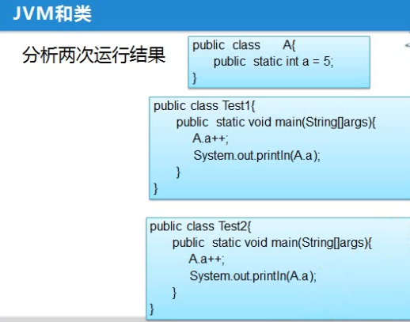

static修饰下列内容:
类：那么这个类必然是内部类
属性：静态变量，类变量
1.属于类;
2.类加载的时候就加载这些静态变量的值了;
类加载就是把.class文件加在方法区里面, 并且在堆里面生成一个对应的对象, 这些对象都是Class类的对象, 我们可以通过这些对象, 调用Class类的相应方法, 来获得字节码文件中的相应的信息,如getName()方法。之所以所有的字节码文件在堆中生成的对应的对象都是Class类型的, 是因为所有字节码文件在堆中生成的对象都有共同的特征和行为, 所以就可以抽取出一个类(因为类就是相似特征的一个集合),这个类就是Class。我们通过字节码文件在堆中生成的对象调用Class类相应的方法, 就可以获得字节码文件的所有信息
3.类卸载。
方法：静态方法
1.只能直接访问静态成员
2.静态方法不能使用 this,super
代码块：静态块
static{
n = 22;
初始化类：
}
静态变量的初始化过程：
1.默认初始化(默认初始化是指:若静态变量定义后没有直接赋值, 则会在初始化阶段给它附一个默认值);
2.声明处或 静态块处初始化。
------------------------------------------------------------------------------------------------------------------------------------
举例:

上面的例子中, 两次输出的结果都会是6, 因为一个应用程序只能有一个main()方法, 而这里是两个main()方法, 说明这里是两个应用程序, 所以这里的两次运行结果是相同的。
Java程序是怎么运行的?
javac命令进行编译
java命令调用虚拟机(JVM),也可以说是JVM进程
程序运行结束后, 整个JVM的内存空间会被释放掉, 下次再运行新的java程序会再调用新的JVM虚拟机。所以上面的例子中的类A的静态变量a的值是不会累加的。
虚拟机在运行代码时首先启动一个主线程执行主方法里的内容。在代码使用到某个类之前, 应该就已经把该类加载到了虚拟机中
java应用程序结束的方式：
1.正常结束；
2.异常 ，错误；
3.System.exit(0);
只要应用程序结束, 那么所有存在java虚拟机内存里的数据都会丢失, 因为所有存在jvm里的数据都是临时存储, 目前只学了一个永久存储那就是文件存储,当然永久存储还有数据库存储。
-------------------------------------
类的生命周期：

加载、连接、初始化三个步骤合起来称为类加载过程。所以要使用某个类的话, 必须先完成加载、连接、初始化这三个步骤, 才能正常使用。
1.加载
把字节码文件 加载到方法区中，
并且生成对应的对象(Class类类型的对象) 在堆中。
2.连接 (连接主要是把字节码文件中的数据加载到jre中)
1）验证：
验证字节码文件是否正确；(格式是否正确, 里面的属性和方法是否正确, 是不是正常途径生成的字节码文件) 这一步主要是为了保护虚拟机, 避免对虚拟机环境的恶意破坏
2）准备：
检查类中是否有静态变量, 如果有, 为类中的静态变量 开辟空间，进行默认初始化(注意: 只进行默认初始化化, 也就是只给默认值, 即使该静态变量赋了初值, 在这步也不会将这个初值给它)；
3）解析：(把字节码文件中的符号语言(引用),通过解析转换成直接语言(引用))
符号引用: 属性名称、方法名称、类的名称等等, 都是以符号的形式来表示的。在字节码以符号来表示的话, 具体调用这些属性、方法的时候, 并不知道他们具体在字节码文件中的什么位置, 所以, 要转换为直接引用, 标记好每个属性、方法的具体位置
直接引用：直接引用就相当于指针, 所以解析就相当于把符号替换为指针
3.初始化
查看各静态变量有没有声明处初始化或静态块初始化, 如果有, 为静态变量 进行声明处 或者 静态块处初始化。
类的初始化:
一个类什么时候会被初始化呢?
当创建某个类的新实例时 (即创建对象时)
当调用某个类的静态成员；(被static final修饰的静态常量要特别注意, 可以在编译器确定其值的静
态常量不会引起类的初始化, 见后面的例子)
当初始化某个子类时,该子类的所有父类都会被初始化。
当使用反射方法强制创建某个类或接口的对象时
当虚拟机通过"java"命令运行启动类(也就是主方法所在的类)时
上面所说的初始化都是在某个类第一次被使用时才会引发类的初始化, 若一个类第二次重复使用时, 说明它已经被加载过了, 是不会再重复加载的。
要验证 类有没有加载 最好的方法就是: 新建一个静态代码块或者在现成的静态代码块里加一个打印输出语句, 如果类加载了,那么这条打印输出语句必然会被打印到控制台, 因为类加载(初始化阶段时)必然会把静态块里面的东西执行一遍。如果该类没有被加载, 那么就不会打印了。
需要特别注意的一种情况就是static final的变量, 这会被当成常量来看待, 如果在编译期就可以确定该常量的值,调用该常量就不会引起类加载。 如下图, 所有出现sn变量的地方都会用11来代替, 字节码文件是没有sn这个变量的, 所以, 调用sn是不会引起类加载的。也就是说 调用在编译期可以确定其值的常量不会引起类加载。(下下图是一个不能在编译期确定其值的常量的例子)

但是要注意的是, 只有在编译期能确定其值的变量, 才不会引起类的加载, 但有些被static final修饰的变量并不能在编译期确定其值, 比如下面这种情况 ,sn的值在编译期变得不能确定了, (此时字节码文件中还是没有sn, 而是所有的sn都被11+n替代了??? 而被11+n替代是不能确定n的值了,所以在字节码文件中变量n的值不能确定才被认为是sn的值不能确定的?), 此时再调用sn, 就需要加载Demo类了。

------------------------------------------------------------------------------------------------------------------------------------------------
类加载器：

分类：
根类加载器(启动类加载器)：Bootstrap ClassLoader
负责加载jdk/jre/lib下的类, 也就是加载java中的基础的、核心的类库。如String、System类等
最顶层的加载类，主要加载核心类库，即%JAVA_HOME%/jre/lib下的rt.jar、resources.jar、charsets.jar和class等。另外需要注意的是可以通过启动jvm时指定-Xbootclasspath和路径来改变Bootstrap ClassLoader的加载目录。Bootstrap ClassLoader是由C/C++编写的，它本身是虚拟机的一部分，所以它并不是一个JAVA类，也就是无法在java代码中获取它的引用，JVM启动时通过Bootstrap类加载器加载rt.jar等核心jar包中的class文件，int.class,String.class都是由它加载。JVM初始化sun.misc.Launcher并创建Extension ClassLoader和AppClassLoader实例。并将ExtClassLoader设置为AppClassLoader的父加载器。Bootstrap没有父加载器，但是它却可以作用一个ClassLoader的父加载器。比如ExtClassLoader。这也可以解释通过ExtClassLoader的getParent方法获取为Null的现象。
扩展类加载器：Extention ClassLoader
负责加载jdk/jre/lib/ext下的类, 也就是加载扩展类库。
加载目录%JAVA_HOME%/jre/lib/ext目录下的jar包和class文件。还可以加载-D java.ext.dirs选项指定的目录。
所以我们也可以自己编写一个类打成jar包, 放在扩展类库里面, 这样的话通过扩展类加载器就可以加载。
系统类加载器(也叫 应用类加载器)：Application ClassLoader (或System ClassLoader)
加载当前应用的classpath的所有类
- 父类加载器为扩展类加载器
- 它负责加载环境变量 classpath (如Windows里的环境变量CLASSPATH,里面的内容是: .;%JAVA_HOME%\lib\dt.jar;%JAVA_HOME%\lib\tools.jar)或系统属性 java.class.path 指定路径下的类库。CLASSPATH中的"."表示的是当前项目的路径, 也就是说系统类加载器也负责加载我们在项目中自己写的所有的类。
- 应用程序中的类加载器默认是系统类加载器
- 它是用户自定义类加载器的默认父加载器
- 通过 ClassLoader 的 getSystemClassLoader() 方法可以获取到该类加载器
开发者可以直接使用系统类加载器，一般情况下该类加载是程序中默认的类加载器，通过ClassLoader.getSystemClassLoader()方法可以获取到该类加载器。
自定义类加载器：Custom ClassLoader
自己指定的路径(而且不能是上面三种类加载器会加载的路径,否则该路径就会被前面三种类加载器加载掉)
需要继承ClassLoader类(其实上面的扩展类加载器和系统类加载器也都继承于 ClassLoader 类, 只有启动类加载器 并不继承自 java.lang.ClassLoader，没有父加载器, 因为这个类加载是用c/c++语言实现的, 嵌套在JVM中)
注意: 类加载器加载的都是.class文件 , 而不是.java文件, 所以自定义类加载器加载不在项目路径里的类时, 记得先把它编译一下。
类加载器加载的先后顺序
Bootstrap CLassloder
Extention ClassLoader
AppClassLoader
Custom ClassLoader
------------------------------------------------------------------------------------------------------------------------------------------------
父类委托(也叫双亲委派)
##双亲委派模式工作原理
双亲委派模式要求除了顶层的启动类加载器外，其余的类加载器都应当有自己的父类加载器，请注意双亲委派模式中的父子关系并非通常所说的类继承关系(也就是说这些类加载之间并没有继承关系)，而是采用组合关系来复用父类加载器的相关代码，类加载器间的关系如下：

双亲委派模式是在Java 1.2后引入的，其工作原理的是，如果一个类加载器收到了类加载请求，它并不会自己先去加载，而是把这个请求委托给父类的加载器去执行，如果父类加载器还存在其父类加载器，则进一步向上委托，依次递归，请求最终将到达顶层的启动类加载器，如果父类加载器可以完成类加载任务，就成功返回，倘若父类加载器无法完成此加载任务，子加载器才会尝试自己去加载，这就是双亲委派模式，即每个儿子都很懒，每次有活就丢给父亲去干，直到父亲说这件事我也干不了时，儿子自己想办法去完成，这不就是传说中的实力坑爹啊？那么采用这种模式有啥用呢?
##双亲委派模式优势
采用双亲委派模式的好处是Java类随着它的类加载器一起具备了一种带有优先级的层次关系，通过这种层级关可以避免类的重复加载，当父亲已经加载了该类时，就没有必要子ClassLoader再加载一次。其次是考虑到安全因素，java核心api中定义类型不会被随意替换，假设通过网络传递一个名为java.lang.Integer的类，通过双亲委托模式传递到启动类加载器，而启动类加载器在核心Java API发现这个名字的类，发现该类已被加载，并不会重新加载网络传递的过来的java.lang.Integer，而直接返回已加载过的Integer.class，这样便可以防止核心API库被随意篡改。可能你会想，如果我们在classpath路径下自定义一个名为java.lang.SingleInterge类(该类是胡编的)呢？该类并不存在java.lang中，经过双亲委托模式，传递到启动类加载器中，由于父类加载器路径下并没有该类，所以不会加载，将反向委托给子类加载器加载，最终会通过系统类加载器加载该类。但是这样做是不允许，因为java.lang是核心API包，需要访问权限，强制加载将会报出如下异常
java.lang.SecurityException: Prohibited package name: java.lang
1
所以无论如何都无法加载成功的。下面我们从代码层面了解几个Java中定义的类加载器及其双亲委派模式的实现，它们类图关系如下

从图可以看出顶层的类加载器是ClassLoader类，它是一个抽象类，其后所有的类加载器都继承自ClassLoader（不包括启动类加载器）
类加载的过程: (父类委托的原理)
1.先查看 此类是否加载过，加载过返回Class对象；
2.没有加载过：
1）父加载器存在，层层委托，由父加载器加载，
能加载就 加载，不能加载 由自己申请的加载器加载；
2）父加载器不存在，直接有根类加载器加载，
能加载就 加载，不能加载 由自己申请的加载器加载；
对于系统类加载器来说, 在java程序运行的过程中, 始终都会引用着已被加载的类的对象模板, 不会将对象模板卸载,直到应用程序结束之后才卸载。所以与之相关的, 我们都知道静态变量是属于类的, 所以在类没被卸载之前, 静态变量也是一直都存在的, 所占的空间不会被释放。也就是说静态变量的生命周期也是非常长的。
-------------------------------------------------------------------------------------------------------------------
举例: 如何查看一个类是哪个加载器加载的以及如何查看其父类加载器:

打印结果如下:
sun.misc.Launcher$AppClassLoader@659e0bfd中, sun.misc.Launcher是说明该加载器位于哪个包下, AppClassLoader就是加载器的类型, @符号后面的"659e0bfd"就是地址。ExtClassLoader的父类加载器是null的原因也说过了, 因为根类加载器是用c++实现的, 是与其他加载器的实现方式不同的。

ClassLoader.loaderClass()方法详解:
ClassLoader.findClass()方法就是真正将字节码文件从文件中取到方法区,并在堆中生成对象模板的方法,详情请看下一个自定义类加载器的例子。

------------------------------------------------------------------------------------------------------------------------------------------------
自定义一个类加载器举例:
假设 d:/data/目录下有一个Hello.class字节码文件。

------------------------------------------------------------------------------------------------------------------------------------------------
安全管理器(SecurityManager)：保证 运行时 访问资源的权限的 安全性。

FileInputStream的构造器里面有一个getSecurityManager()方法来获得一个安全管理器SecurityManager。通过SecurityManager来去管理我们需要访问的资源的权限

然后通过SecurityManager的checkRead()方法来查看具体有没有读的权限。

接下来尝试自己定义一个安全管理器类用来读文件
因为FileInputStream的构造方法只用到了SecurityManager类的checkRead()方法, 所以可以忽略其他方法, 只重写这个方法。

打印结果如下:

-----------------------------------------------------------------------------------------------------------------------------
反射： (第一部分)
Hadoop底层用的就是反射, 是架构师的必备技能。
我们通常在jdbc中使用反射,如 Class.forName("com.mysql.jdbc.Driver")。因为数据库有可能用的是mysql、oracle/hive/hbase中的任何一个, 所以不能用new com.mysql.jdbc.Driver();直接写死用的是mysql数据库, 要根据具体情况来用反射来连接相应的数据库。所以接下来要连接其他数据库,如hive或oracle, 则只需将语句改为如下形式则可轻松连接:
Class.forName("com.oracle.jdbc.Driver")
Class.forName("com.hive2.jdbc.Driver")
反射的好处：
不用关心代码底层的细节
提升代码的灵活性
类的概念：
具有相同属性（静态，属性）或行为（动态、方法）的一类事物的统称
描述一类具有相同特征或属性的事物
对象：
类的实例化 类中的一个具体表现
有没有描述类的共同属性或行为的类呢？ 有, Class类就是。
Class: 描述类的类。
一个类里面说白了就只有：属性、方法、构造方法。所以Class类说白了就是描述一个类里面的属性、方法、构造方法的。
Class是反射的基石。
1）如何获取Class对象：
类名.class
Class cla01=String.class;
对象.getClass
Class class02 = str.getClass();
Class.forName
Class class03 = Class.forName("java.lang.String");
以上三种方式返回的是相同的对象
反射中有9种预定义的类型: 分别是 8种基本数据类型+void。因为这些都没有对应的对象模板(或者说他们根本不是个类),所以在反射中要将这些类的对象模板预定义好, 他们才能使用.class关键字, 如int.class。
使用示例如下:

2)属性 方法 构造方法的
Field:描述属性的 获取 赋值
Method：描述方法的 获取 调用
Constructor：描述构造方法的 获取 创建对象
--------------------------------------------------------------------------------------------------------------------------
反射：(第二部分)
程序运行的时候，通过 字节码文件 对应的对象从字节码文件(即.class文件)中获得 此类的所有信息。
java代码中的"类.class"中的".class"关键字就是用来获得类对应的对象模板的,或者说用来获得类对应的Class类的对象的。 "类.class"的形式也很像文件系统中的字节码文件的格式, 而对象模板也正是由字节码文件生成的。
要注意, 不止有"类.class", 还有"基本数据类型.class"(如"int.class",而且int.class不等于Integer.class, 也就是说基本数据类型的对象模板和包装类的对象模板不一样), 还有"void.class" 。其实基本数据类型和void是没有对应的对象模板的, 但是Class类为他们专门预定义了对象模板。
实际上java的每个类被编译成.class文件的时候，java虚拟机（叫jvm）会自动为这个类生成一个类对象，这个对象保存了这个类的所有信息（成员变量，方法，构造器等），以后这个类要想实例化（也就是创建类的实例或创建类的对象）那么都要以这个class对象为蓝图（或模版）来创建这个类的实例。例如 class<?> c=Class.forName("com.pojo.User"); c就是User的类对象，而 User u=new User();这个 u 就是以 c 为模版创建的，其实就相当于u=c.newInstance(); 这个在java的反射里面讲的比较清楚。
反射相关的类都位于java.lang.reflect包下。
通过反射访问以下内容:
访问属性：Field类就是属性类,Field类的一个对象就是一个属性
getFields()获得公共的所有属性。
返回一个Field类型数组，其中包含当前类的public字段，如果此类继承于某个父类，同时包括父类的public字段。其它的proteced或private或default字段，无论是属于当前类还是父类都不被此方法获取。
getDeclaredFields() 获得所有权限的属性，包括private
返回一个Field类型数组，结果包含当前类的所有字段，private、protected、public或者无修饰符都在内。另外，此方法返回的结果不包括父类的任何字段(包括public的也获取不到)。 此方法只是针对当前类的。
getName() 获得属性名称
getType() 获得属性的类型
Modifier.toString(field.getModifiers())获得访问的访问权限,如public
getDeclaredField("属性名") 获得单个属性
c.newInstance() 创建一个具体的类的实例（对象）
set(obj, "张三") 给属性赋值
get(obj) 获得属性值
setAccessible(true) 设置私有属性的访问权限为可访问。
访问方法：
getMethods()获得公共的所有方法。
getDeclaredMethods() 获得所有的方法 (getDeclaredMethods()和 getMethods()的区别与getFields()和 getDeclaredFields()的区别一样。或者说Class类中的方法, 所有getDeclaredXXX()和getXXX()方法的区别都和上面的getFields()和 getDeclaredFields()的一样)
getReturnType() 返回值类型
getParameterTypes() 参数列表类型
getDeclaredMethod("show", String.class,int.class)
获得单个的方法 （方法名，参数列表类型）
invoke(obj, "hello",123) 调用方法
(对象， 参数列表)
访问构造器：
getConstructors() 获得public的构造器
getDeclaredConstructors() 获得所有的构造器
getDeclaredConstructor(int.class,String.class)
获得单个的构造器 （参数列表类型）
newInstance(11,"李四") 调用构造器
(参数列表)
访问注解：
getDeclaredAnnotations()获得所有注解信息
getAnnotations() 用于子类继承父类的注解
反射的使用举例: 例子很长,但里面都是使用时的干货


通过反射创建新的类示例，有两种方式：
Class的newInstance()方法
Constructor的newInstance()方法
以下对两种调用方式给以比较说明：
Class的newInstance()方法只能够调用 无参的构造函数;
Constructor的newInstance()方法可以根据传入的参数，调用任意一个构造构造函数。
Class的newInstance()方法 要求被调用的构造函数是可见的，也即必须是 public类型的;
Constructor的newInstance()方法 在特定的情况下可以 调用私有的构造函数(即在使用Constructor的某对象c调用newInstance()方法之前, 先设置权限c.setAccessible(true);即可调用到私有的构造函数,而Class的newInstance()方法不能调用到不可见的构造函数是因为Class类根本没有内置更改访问权限的方法setAccessible(true))。
Class的newInstance()方法 抛出所有由被调用构造函数抛出的异常。
------------------------------------------------------------------------------------------------------------------------------
注解：

注解说白了就是帮助你在编译期进行检查, 给编译器提供信息, 看看你的操作是不是在注解范围内允许的操作,起到了进一步约束写代码的格式的作用。注解同时也是在源码中加一些扩充性的信息, 方便代码的阅读。而且有的注解还有它自己独特的功能。
并且, 反射技术可以获得各个注解的信息。
系统注解有以下：

@Override 重写
@FunctionalInterface 函数式接口
@Deprecated 标记某个类或方法或属性已过时, 该类或方法或属性在使用时就会在中间划上一条横线, 表示它已被弃用(但其实仍然可以用,只是不推荐用了)

@SuppressWarnings("要镇压的警告类型") 在出现某种警告的时候, 镇压警告。有下面几种常见的警告类型:
all 所有警告
rawtypes 泛型使用的是原生类型的警告
unchecked 未进行类型检查的警告
unused 变量未使用的警告
serial 序列化时未添加序列号的警告
使用举例:
因为List是个泛型类型, 如果不指定泛型的具体类型参数, 那么List下面会有一条黄色的波浪线, 也就是警告。这个时候就可以使用编译器的提示来镇压原生类型(rawtypes)的警告了

镇压rawtypes警告后的效果如下:

于此同时还可以镇压另一个list变量还未使用的警告(unused):

镇压unused警告后的效果如下:

如果在原生类型下往泛型类的对象里面添加数据的话, 就会出现未检查(unchecked)的警告, 因为原生类型就默认类型参数是Object类型的, 这样的话什么数据都能传, 编译器就不知道传过来的数据合不合规,就会产生这个警告:

镇压unchecked警告后的效果如下:

当一个类继承Serializable接口时, 就会出现一个serial警告, 是要你添加一个序列化的ID,用于序列化与反序列化的版本匹配:

镇压serial警告后的效果如下:

----------------------------------------------------------------------------------------------------------------------------------------------------
自定义注解:
自定义注解的格式如下:
@interface 注解名{
类型 成员名() [default 默认值]； ("default 默认值"可给可不给,默认值可以是任何已定义类型的对象)
……
}
自定义注解后还不能直接使用, 自定义完注解后还要加上元注解, 来说明自定义注解要使用在什么地方。
元注解：用来标注 自定义的注解的。放在在自定义注解的前一行处(相当于自定义注解的注解, 所以叫元注解)。
元注解有四个: 功能各不相同。前面两个是最重要的, 一定要指定的。
@Target(ElementType.XXX) 指定自定义注解使用的范围
@Retention（ ） 指定生命周期
@Inherited 指定被修饰的自定义注解将具有继承性。也就是说, 某自定义注解指定了@Inherited, 父类被该自定义注解修饰, 那么继承该父类的子类可也具有了的该自定义注解。
@Documented 指定被修饰的自定义注解将在帮助文档中显示相应的信息
@Target((ElementType.XXX)
ElementType是一个枚举类, 里面包含的常用枚举对象以及含义如下图, 选择了哪个枚举对象, 就只能在对应的范围内使用自定义注解:

@Retention(RetentionPolicy.XXX)
其中的RetentionPolicy也是枚举, 常用枚举对象如下图。
1、RetentionPolicy.SOURCE：注解只保留在源文件，当Java文件编译成class文件的时候，注解被遗弃；
2、RetentionPolicy.CLASS：注解被保留到class文件，但jvm加载class文件时候被遗弃，这是默认的生命周期；
3、RetentionPolicy.RUNTIME：注解不仅被保存到class文件中，jvm加载class文件之后，仍然存在；也就是在运行时该注解还存在。如果希望通过反射的技术来获得该自定义的注解信息, 那么一定要选择RetentionPolicy.RUNTIME。
这3个生命周期分别对应于：Java源文件(.java文件) ---> .class文件 ---> 内存中的字节码。
那怎么来选择合适的注解生命周期呢？
首先要明确生命周期长度 SOURCE < CLASS < RUNTIME ，所以前者能作用的地方后者一定也能作用。一般如果需要在运行时去动态获取注解信息，那只能用 RUNTIME 注解；如果要在编译时进行一些预处理操作，比如生成一些辅助代码（如 ButterKnife），就用 CLASS注解；如果只是做一些检查性的操作，比如 @Override 和 @SuppressWarnings，则可选用 SOURCE 注解。

@Inherited
子类可以继承父类的类类型上的注解。指定被修饰的自定义注解将具有继承性。也就是说, 如果某个类使用了该自定义注解, 那么其子类也会自动被该自定义注解修饰。
@Documented
如果某个自定义注解使用了该元注解, 那么生成的帮助文档中, 可以看到该自定义注解的相应的一些信息

----------------------------------------------------------------------------------------------------------------------------

----------------------------------------------------------------------------------------------------------------------------
自定义注解和注解解析使用举例:

-----------------------------------------------------------------------------------------------------------------------
一个练习题,关于反射和注解:

代码如下: